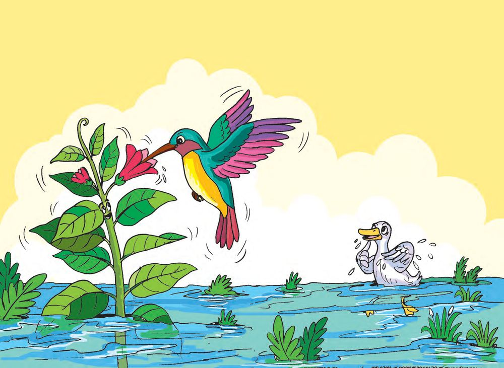
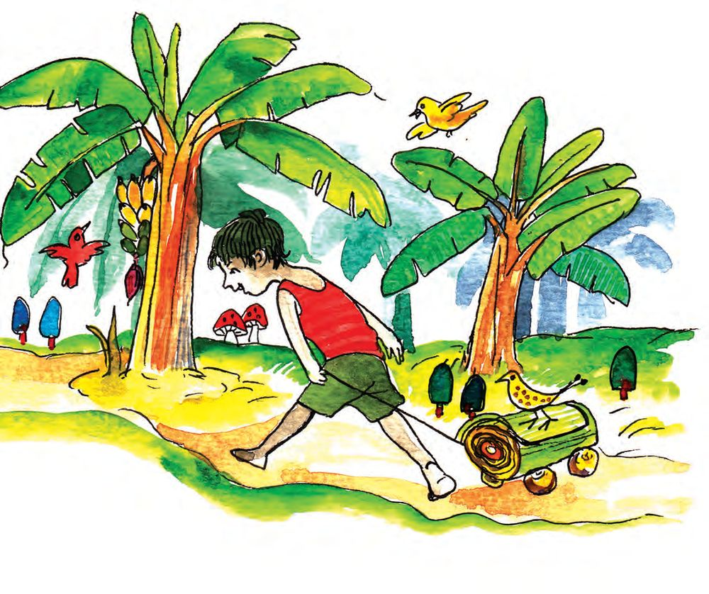
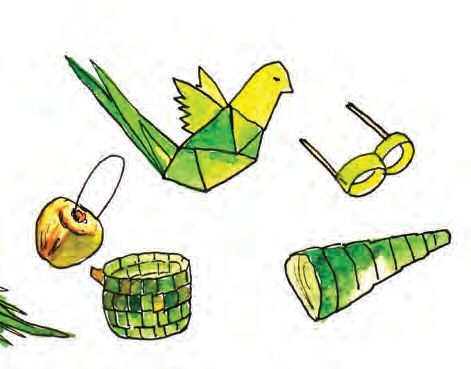

2
പൂവ് ചിരിച്ചു
മഴ മാറി
ുവീ
ര
ു
ക
വീ
ാ.
കുരുതിലേ വാ
ഇ
Page 15

Figure fig_ch01_p015_01 (Page 15)
പറന്നുവന്നു.
കുരുവി പാറിവന്നു.
തേൻ കുടിച്ചു.
കുരുവി .................... കുടിച്ചു.
ചിരിച്ചുനിന്നു.
പൂവ് .................... നിന്നു.
.........................................................
.........................................................
അതാ...................................
ആ പൂവിലെ
തേൻ നുകരുന്നു.
ഞാൻ ചെന്നാലോോ?
അറിയാമോോ? പറയാമോോ?
കളിയുടെ പേരുകൾ പറയാമോോ?
അറിയാമേ പറയാമേ
കളിയുടെ പേരുകൾ പറയാമേ.
പാവകളിക്കൽ, തൊൊട്ടുകളിക്കൽ
ഓടിക്കളിയും കളിയാണേ.
അറിയാമേ പറയാമേ
........................ പേരുകൾ പറയാമേ.
പാടിക്കളി ചാടിക്കളി പിന്നെ
............................. .............................
22
Page 23

Figure fig_ch01_p023_01 (Page 23)

Figure fig_ch01_p023_02 (Page 23)
കളിപ്പാട്ടങ്ങൾ വേണോോ?
മരമേ മരമേ പുന്നാരേ
തരുമോോ കൊൊച്ചുകളിപ്പാട്ടം?
പന്ത് വേണോോ? പാവ വേണോോ?
പമ്പരം വേണോോ? പറഞ്ഞഞോളു.
വേണം വേണം വേണം
ഓലകൊൊണ്ടടൊരു പീപ്പി, ഓലപ്പീപ്പി
ഓലകൊൊണ്ടടൊരു പന്ത്, ഓലപ്പന്ത്
.............................................. .......................